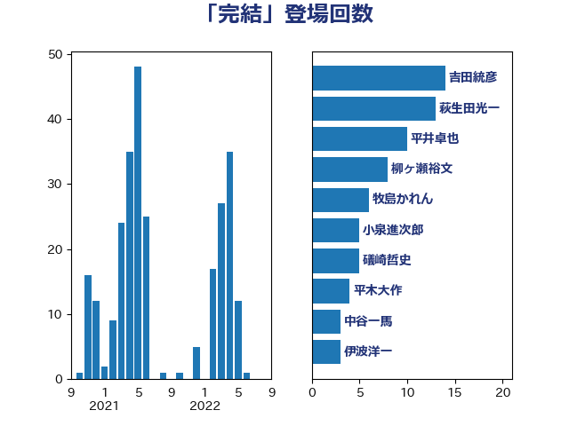

単語「完結」

| 吉田統彦 | 立憲民主党 | 14 回 |
| 萩生田光一 | 自由民主党 | 13 回 |
| 平井卓也 | 自由民主党 | 10 回 |
| 柳ヶ瀬裕文 | 日本維新の会 | 8 回 |
| 牧島かれん | 自由民主党 | 6 回 |
| 小泉進次郎 | 自由民主党 | 5 回 |
| 礒崎哲史 | 国民民主党 | 5 回 |
| 平木大作 | 公明党 | 4 回 |
| 中谷一馬 | 立憲民主党 | 3 回 |
| 伊波洋一 | 無所属 | 3 回 |
| 加田裕之 | 自由民主党 | 3 回 |
| 小林史明 | 自由民主党 | 3 回 |
| 藤田文武 | 日本維新の会 | 3 回 |
| 音喜多駿 | 日本維新の会 | 3 回 |
| 国定勇人 | 自由民主党 | 2 回 |
| 堀場幸子 | 日本維新の会 | 2 回 |
| 山本太郎 | れいわ新選組 | 2 回 |
| 山田太郎 | 自由民主党 | 2 回 |
| 岸田文雄 | 自由民主党 | 2 回 |
| 岸真紀子 | 立憲民主党 | 2 回 |
| 川田龍平 | 立憲民主党 | 2 回 |
| 柚木道義 | 立憲民主党 | 2 回 |
| 柴田巧 | 日本維新の会 | 2 回 |
| 梶山弘志 | 自由民主党 | 2 回 |
| 浜野喜史 | 国民民主党 | 2 回 |
| 田村憲久 | 自由民主党 | 2 回 |
| 石川博崇 | 公明党 | 2 回 |
| 秋野公造 | 公明党 | 2 回 |
| 遠藤敬 | 日本維新の会 | 2 回 |
| 階猛 | 立憲民主党 | 2 回 |
| 三浦信祐 | 公明党 | 1 回 |
| 世耕弘成 | 自由民主党 | 1 回 |
| 中川正春 | 立憲民主党 | 1 回 |
| 伊藤岳 | 日本共産党 | 1 回 |
| 北神圭朗 | 無所属 | 1 回 |
| 古川元久 | 国民民主党 | 1 回 |
| 嘉田由紀子 | 無所属 | 1 回 |
| 坂本哲志 | 自由民主党 | 1 回 |
| 塩川鉄也 | 日本共産党 | 1 回 |
| 小林鷹之 | 自由民主党 | 1 回 |
| 小沼巧 | 立憲民主党 | 1 回 |
| 小野泰輔 | 日本維新の会 | 1 回 |
| 岡本三成 | 公明党 | 1 回 |
| 岡田克也 | 立憲民主党 | 1 回 |
| 岸信夫 | 自由民主党 | 1 回 |
| 平山佐知子 | 無所属 | 1 回 |
| 徳永久志 | 立憲民主党 | 1 回 |
| 新藤義孝 | 自由民主党 | 1 回 |
| 早坂敦 | 日本維新の会 | 1 回 |
| 松本尚 | 自由民主党 | 1 回 |
| 松沢成文 | 日本維新の会 | 1 回 |
| 柳本顕 | 自由民主党 | 1 回 |
| 森田俊和 | 立憲民主党 | 1 回 |
| 櫻井周 | 立憲民主党 | 1 回 |
| 浅野哲 | 国民民主党 | 1 回 |
| 浜口誠 | 国民民主党 | 1 回 |
| 牧山ひろえ | 立憲民主党 | 1 回 |
| 田島麻衣子 | 立憲民主党 | 1 回 |
| 田村貴昭 | 日本共産党 | 1 回 |
| 石井啓一 | 公明党 | 1 回 |
| 石破茂 | 自由民主党 | 1 回 |
| 福島伸享 | 無所属 | 1 回 |
| 笠浩史 | 無所属 | 1 回 |
| 緑川貴士 | 立憲民主党 | 1 回 |
| 舟山康江 | 国民民主党 | 1 回 |
| 舩後靖彦 | れいわ新選組 | 1 回 |
| 茂木敏充 | 自由民主党 | 1 回 |
| 菅直人 | 立憲民主党 | 1 回 |
| 藤井比早之 | 自由民主党 | 1 回 |
| 赤羽一嘉 | 公明党 | 1 回 |
| 足立康史 | 日本維新の会 | 1 回 |
| 野田聖子 | 自由民主党 | 1 回 |
| 金子恵美 | 立憲民主党 | 1 回 |
| 鈴木英敬 | 自由民主党 | 1 回 |
| 阿部知子 | 立憲民主党 | 1 回 |
| 馬場成志 | 自由民主党 | 1 回 |
| 高木かおり | 日本維新の会 | 1 回 |
| 高橋克法 | 自由民主党 | 1 回 |
| 高階恵美子 | 自由民主党 | 1 回 |